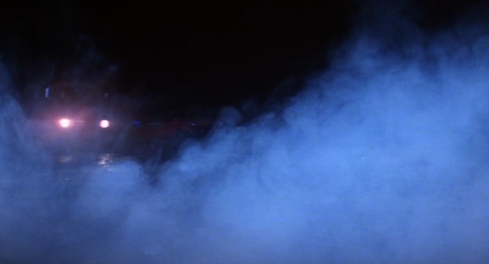

These are some of the musical analyses captured from my
transcription of "Aboard the Seagrass Part 3" from the Fog (1980) score
This is a Histogram of the number of pitches made using Music21
This is another visualisation made using music21 which captures notes
This is a chart capturing a selection of musical data made using jSymbolic and Microsoft Excel
The Fog (1980) Movie Information on IMDB 